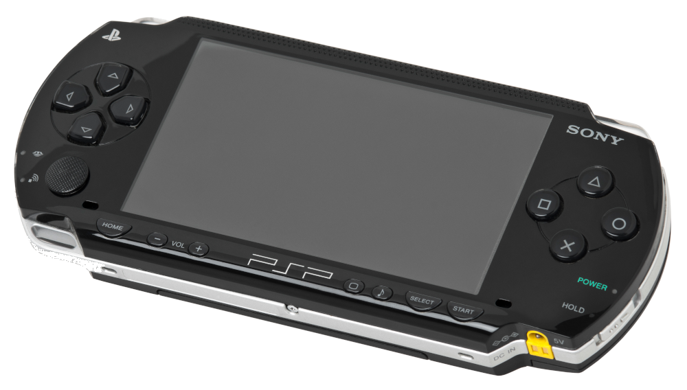
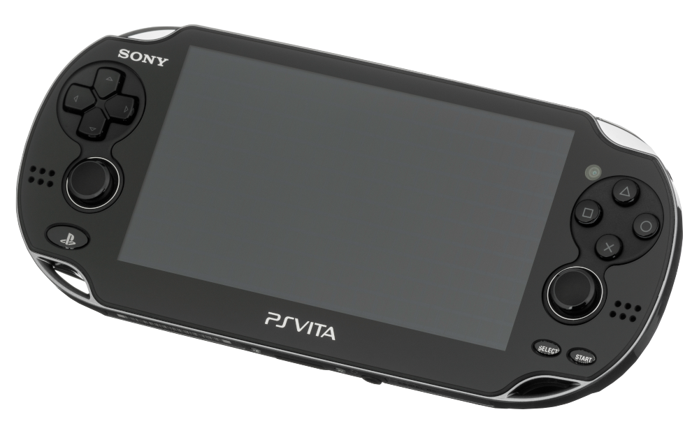

Sony Handhelds

PlayStation Portable (2005)
Announced in 2003, the PSP was Sony's first time entering the handheld market, and was a considerable rival to the Nintendo DS. The hardware was far superior; for many, the choice was obvious.

PlayStation Vita (2011)
This may be one of the most ambitious handhelds ever created, with a touch pad on the back, dual analog sticks a high-quality display. The Vita is a favorite among enjoyers of JRPGs, and is made even better with its backwards-compatibility with the PSP. However, it never saw the success of its predecessor, and Sony has since left the handheld market in favor of home consoles.